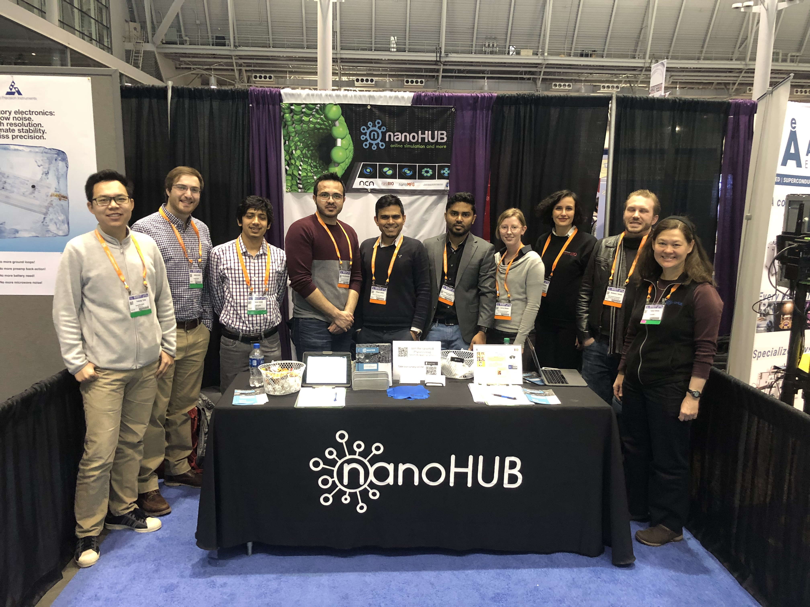
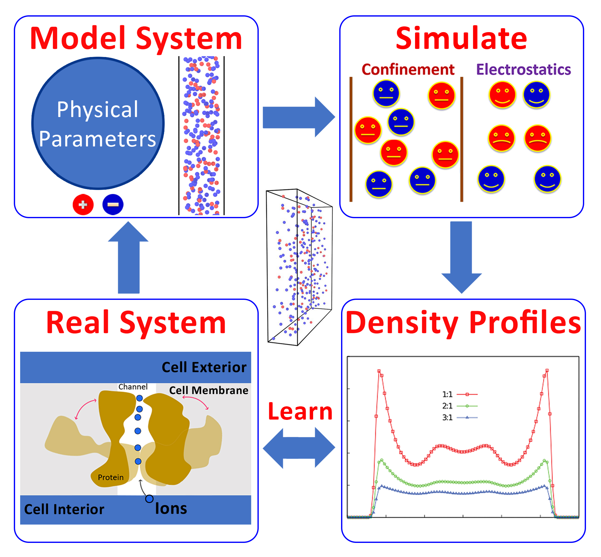
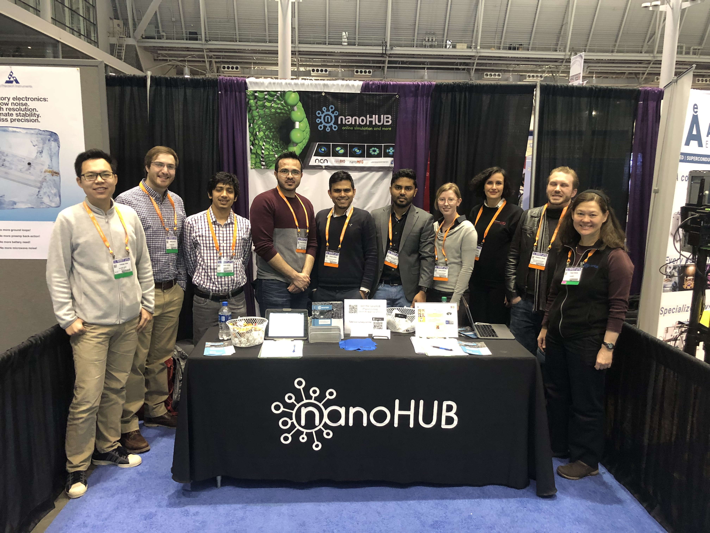
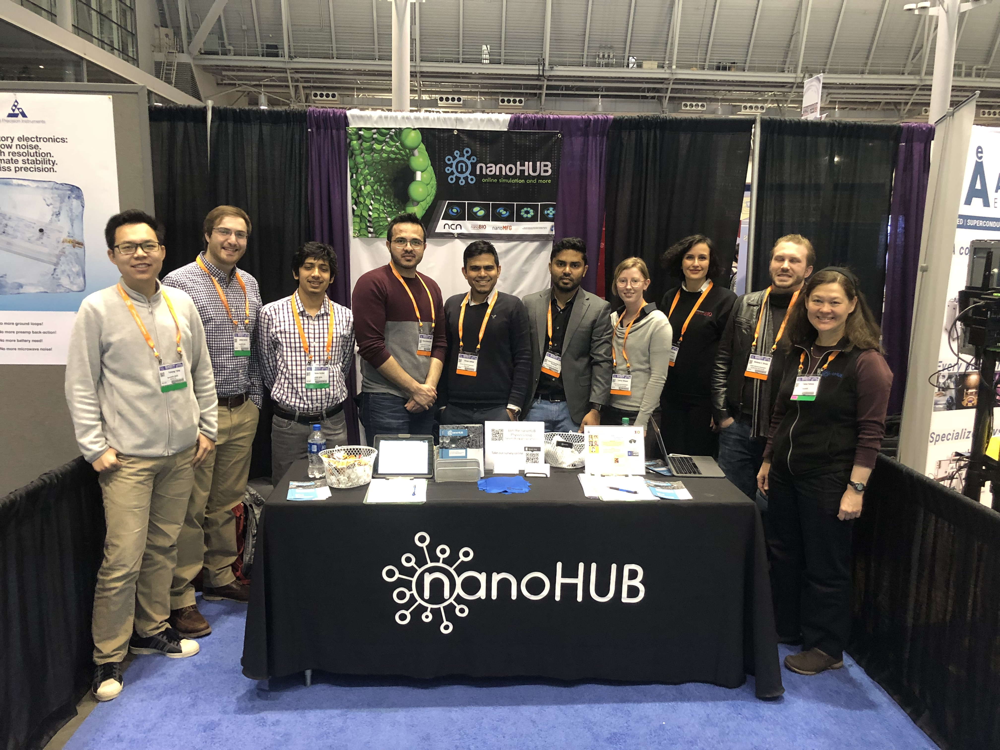

Mar 2022 - Lots of adventures, great food, and learning in the first in-person conference in almost 3 years: March Meeting 2022, Chicago!
Oct 2021 - Paper "Probing the Rheological Properties of Liquids Under Conditions of Elastohydrodynamic Lubrication Using Simulations and Machine Learning" by Kadupitiya is highlighted in the November edition of the Society of Tribology & Lubrication Technology (STLE) magazine in the article Editors’ Selections: Best from STLE’s Research Community.
Aug 2021 - Big congratulations to Dr. Nicholas E. Brunk. Nick is the first student from the group to graduate with a PhD!! Nick has joined VeriSIM Life as a Senior Scientist. We wish you the best of luck and success in the future, Nick—we will miss you!
May 2021 - Paper "Probing the Rheological Properties of Liquids Under Conditions of Elastohydrodynamic Lubrication Using Simulations and Machine Learning" by Kadupitiya is published in Tribology Letters in a special issue that pays tribute to Mark Robbins. Mark was a giant in the fields of soft matter and polymer physics, and an exceptionally warm and empathetic person. We miss him. Paper | Special Issue
April 2021 - Nicholas Brunk joins VeriSIM Life as a Senior Scientist. JCS Kadupitiya will join Microsoft Research as a
Summer Intern in May 2021. Congratulations Nick and Kadupitiya!
Dec 2020 - Paper "Designing Surface Charge Patterns for Shape Control of Deformable Nanoparticles" by Nicholas and Kadupitiya published in Physical Review Letters! Luddy Story
Dec 2020 - Paper "Ionic Structure and Decay Length in Highly Concentrated Confined Electrolytes" by Nasim selected as Featured Article in AIP Advances and as AIP Scilight!
April 2020 - Vikram selected as one of the 5 winners of the Indiana University Outstanding Junior Faculty Award! IU story
Dec 2019 - Conference paper "Machine learning for performance enhancement of molecular dynamics simulations" selected among the Best Papers of ICCS 2019.
Mar 2019 - We had a fun March Meeting 2019 in Boston (aside from the cold)! This includes a nice get-together with members from nanoMFG (Urbana) and nanoHUB (Purdue) nodes.

Mar 2018 - We receive a NSF CAREER award!
We thank the NSF and the materials research community for this tremendous honor and support.
SICE story
Dec 2017 - App to simulate ions in nanoconfinement
is released on nanoHUB. Designed in collaboration with the Fox group, this app is part of the IU Engineered nanoBIO node.

Sep 2017 - We are part of the team that receives a NSF award
to establish Engineered nanoBIO node at IU. The node will develop web-based computational nanotechnology tools to advance nanoscale device design.
SICE story
Jul 2017 - Work on probing large viscosities of glass-forming materials using nonequilibrium shear simulations is published; also, see related correction and our reply in response to a letter on the original aritcle


 
